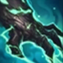
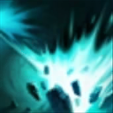
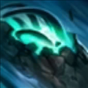
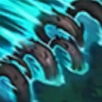

起手裝備
 紅水晶
紅水晶
日炎聖盾→寒冰霸拳後，第三件由固定荊棘改無盡絕望，優先補雙防與貼身續戰；荊棘只在敵方治療且能觸發重創時替換第三件。好戰者最後購買，前三件已補生命，仍須按當局替換後重算1250額外生命。


五件成裝與鞋子分開列示；起手與核心是購買路線，不是額外佔用的成裝欄位。鞋子完成時機仍依對線壓力與回城金錢調整。


維持不死之握及防禦主系，利用可安全碰到敵人的短換血回血；副系凱旋改卓越，加速技能循環而非依賴擊殺回復。遠程消耗線可把骨甲改回春。

茂凱：閃現留作躲關鍵控制／開戰，傳送支援回線與物件；施放前先確認兵線與落點安全。
加點優先：Q > W > E
由 Q>E>W 改 Q>W>E，前三級 Q、W、E；一技清線，二技升級縮短冷卻並延長定身，較符合貼身控制坦克。三技先保留探草與草叢騷擾用途，不再優先投資到四級。

普攻週期性造成額外魔法傷害並治療自身；施法或被敵方技能命中會縮短冷卻。

釋放震波造成魔法傷害、緩速並把近身敵人擊退。

化為扭曲根鬚衝向指定敵人，期間不可被選取，抵達後將其定身。
丟出樹苗在地面守候，發現敵人後追擊並爆炸；草叢中的樹苗傷害與持續時間更強。

召喚多排巨大根鬚向前推進，命中敵方英雄會造成傷害與長時間定身。
二技到目標後再調整身位用一技推回，樹苗提供視野但不能取代偵察守衛。
2技 → 1技推回 → 被動普攻 → 3技
二技鎖定後站到敵人身後，用一技推向己方，穿插被動普攻回復生命。
4技 → 2技 → 1技 → 3技
大絕封鎖正面走位，命中後接二技定身與一技推回，延長控制鏈。
3技樹苗 → 2技 → 1技 → 普攻
提前在草叢放置樹苗取得視野與傷害，敵人靠近後再連續控制。
一技補兵並阻止近戰持續追擊；二級補二技，配合被動普攻打短換血。三技探草後再向前，不為不死之握強行深入敵方兵線。
日炎聖盾→寒冰霸拳→無盡絕望，兼顧清線、魔力與雙防。敵方重回血時把第三件改荊棘；好戰者放後段，購買前確認1250額外生命，不能計入基礎生命。
後期以保排與反開為主，優先綁住切自家後排的刺客或鬥士。
菲歐拉與關的長戰處理坦克能力較強，靠控線與隊友跟進取得價值。
對局名單是機制與分路判斷，不代表固定勝率；需同時看雙方熟練度、兵線與陣容。
本站巴龍路 B：被動普攻回血及指定定身讓他穩定配合打野、轉團保排；對百分比傷害鬥士與能阻擋定身的對手仍缺單殺和邊線主導力。評級依此功能定位，不移植輔助 Tier。
日炎聖盾→寒冰霸拳後，第三件由固定荊棘改無盡絕望，優先補雙防與貼身續戰；荊棘只在敵方治療且能觸發重創時替換第三件。好戰者最後購買，前三件已補生命，仍須按當局替換後重算1250額外生命。
對局名單是技能與換血條件的提示，不是7.3b勝率排名。先看敵方突進、關鍵防禦技能與兵線；裝備成形後重新評估，不能把前期有利當整場必勝。
以下情境替換以本頁7.3b五件成裝為基準。同一格多項建議擇一；鞋子由二級升三級，主動裝另占成裝格。
高
觸發：暴擊射手是主要威脅時替換末件，不以純生命代替物防。
好戰者鎧甲 → 蘭頓之兆
面對暴擊普攻多時，將好戰者鎧甲換成蘭頓之兆；先保留前三件核心，若替換核心位須確認目前死亡或輸出不足的原因。
面對暴擊普攻多時，將好戰者鎧甲換成蘭頓之兆；先保留前三件核心，若替換核心位須確認目前死亡或輸出不足的原因。
主動裝占成裝格；鞋子更換時整條升級路線一起更換。
高
觸發：持續魔法傷害令你無法站住時補魔防，必要時提前至第三件。
目前配置已提供部分魔法傷害多所需功能；先按威脅調整購買順序，不為分類名稱強行多買一件。
主動裝占成裝格；鞋子更換時整條升級路線一起更換。
高
觸發：能持續對主要治療目標造成傷害，或該目標會普攻你時。
無盡絕望 → 荊棘之甲
敵方治療已影響擊殺，而且你能持續對目標造成傷害或承受其普攻時，將無盡絕望換成荊棘之甲；不需要重創就保留雙防續戰。荊棘總價2850，重創由受英雄普攻或對英雄造成傷害觸發，不要求一定先定身。
敵方治療已影響擊殺，而且你能持續對目標造成傷害或承受其普攻時，將無盡絕望換成荊棘之甲；不需要重創就保留雙防續戰。荊棘總價2850，重創由受英雄普攻或對英雄造成傷害觸發，不要求一定先定身。
主動裝占成裝格；鞋子更換時整條升級路線一起更換。
高
觸發：自己有足夠坦度且隊友承傷壓力大時，以功能裝保護主力。
好戰者鎧甲 → 騎士誓願
面對保護隊友時，將好戰者鎧甲換成騎士誓願；先保留前三件核心，若替換核心位須確認目前死亡或輸出不足的原因。
面對保護隊友時，將好戰者鎧甲換成騎士誓願；先保留前三件核心，若替換核心位須確認目前死亡或輸出不足的原因。
主動裝占成裝格；鞋子更換時整條升級路線一起更換。
高
觸發：二級鞋改水星之靴，三級鞋對應鎖鏈軍靴；韌性不縮短擊飛。
鍍板鋼蓋 → 水星之靴
魔法傷害及可縮短的控制占主導時，整條改水星之靴→鎖鏈軍靴；韌性不能縮短擊飛。
魔法傷害及可縮短的控制占主導時，整條改水星之靴→鎖鏈軍靴；韌性不能縮短擊飛。
主動裝占成裝格；鞋子更換時整條升級路線一起更換。
7.3c差異核對：7.3c直接平衡項目屬符文大亂鬥；本頁保留已核對的峽谷配置。版本更新不等於每位英雄都必須更換Tier或裝備。查看整輪校正範圍。
本頁校正版本：7.3c；校正日期：2026-10-25。
參考來源標示版本：7.3c
本輪核對官方版本差異、道具/符文引用、五成裝與鞋線、逐級加點及情境替換一致性。Tier及玩法屬本站編輯判斷，不是官方排名或台服勝率；未公開的全級技能表不推算。
評級理由：7.3c 維持 B（本站判斷）。本站巴龍路 B：被動普攻回血及指定定身讓他穩定配合打野、轉團保排；對百分比傷害鬥士與能阻擋定身的對手仍缺單殺和邊線主導力。評級依此功能定位，不移植輔助 Tier。 7.3c 未改動此分路的英雄數值，沒有新證據只因版本號而升降。
Riot 官方資料 ↗ · Riot 官方資料 ↗ · Riot 官方資料 ↗ · Riot 官方資料 ↗ · WildRiftFire 參考攻略 ↗ · WildRiftFire 參考攻略 ↗ · Riot 官方資料 ↗ · wildriftcore.com ↗ · Riot 官方資料 ↗
7.3c 的直接英雄倍率改動屬符文大亂鬥；本召喚峽谷配置承接 7.3b。未把模式專屬增削轉為峽谷增削。
五件成裝、獨立鞋線、起手、核心、情境替換引用與一般符文列別均重新檢查；移除裝備不列入當前推薦。